UT1: INTERNET, EVOLUCIÓN Y FUNDAMENTOS WEB ¶
FICHA TÉCNICA DE LA UNIDAD ¶
| Resultados de Aprendizaje (RA) | RA1: Instala gestores de contenidos, identificando sus aplicaciones y configurándolos según requerimientos. |
| Criterios de Evaluación (CE) | RA1: a, b, d, g |
| Tiempo | Total: 20 horas (Teoría: 3 h / Práctica: 17 h) |
¶
ÍNDICE DE CONTENIDOS ¶
1. INTRODUCCIÓN Y CONTEXTUALIZACIÓN 📖
2.1. Definición de Internet e Infraestructura Física
2.2. El Lenguaje de la Red: La Pila de Protocolos TCP/IP
2.3. Clasificación de la Web por su Accesibilidad 📖
2.4. Servicios Primordiales de Internet
3. FUNDAMENTOS, ARQUITECTURA Y SERVICIOS
3.1. Identificación en la Red: Direcciones IP y Nombres de Dominio
3.2. Proveedores de Internet (ISP) y Resolución DNS
3.3. El Servidor Web: HTTP/HTTPS, URLs, Virtual Hosts y Puertos
3.4. El Cliente Web: Navegador
4. EVOLUCIÓN DE LAS ETAPAS DE LA WEB 📖
5. INTEGRACIÓN WEB Y BASES DE DATOS
5.1. Arquitectura de 3 Capas (Cliente-Servidor Dinámico)
5.2. Ciclo de Vida de una petición dinámica
6.2. Estructura Semántica Estricta y Cabecera de Página
6.3. Elementos del Bloque de Texto
6.4. Estructuración mediante Listas
6.9. Comentarios dentro de Código
7. CAPA DE DISEÑO Y MAQUETACIÓN: CSS3
7.1. Introducción a CSS3 y Modos de Aplicación
7.2. Prioridad y Herencia de los Estilos
7.4. Sintaxis y Trazado de Líneas (<hr>)
7.5. Reglas, Selectores de Elemento, Clases e Identificadores
7.6. Propiedades de Fuente, Texto y Fondos
7.7. Capas y Posicionamiento (Absolute, Relative, Z-Index)
7.8. El Modelo de Caja (Box Model) en Profundidad
7.9. Propiedades Shorthand (Abreviadas)
7.10. Frameworks CSS (Concepto, Layouts, Ventajas y Tipos) 📖
Importante: los apartados marcados con 📖, son de lectura obligatoria aunque no se expliquen durante las clases teóricas.
1. INTRODUCCIÓN Y CONTEXTUALIZACIÓN 📖 ¶
En el entorno informático actual, un Técnico en Sistemas Microinformáticos y Redes (SMR) no limita su actividad a reparar equipos en local o tirar cableado de red. Gran parte de los servicios corporativos críticos (ERPs, bases de datos de clientes, intranets, tiendas online) se han trasladado a infraestructuras web locales o a la nube.
Esta unidad proporciona al alumnado las bases teóricas de redes y el dominio inicial del código del lado del cliente (HTML5 y CSS3). Estas destrezas son fundamentales para comprender cómo viaja la información por la red, facilitando que el técnico diagnostique con éxito caídas de servicio, configure servidores web o despliegue aplicaciones de escritorio virtual y gestores de contenido (CMS).
2. CONCEPTOS FUNDAMENTALES ¶
2.1. Definición de Internet e Infraestructura Física ¶
Internet se define como una infraestructura global de redes y equipos informáticos enlazados entre sí, con el objetivo primordial de transferir datos y compartir recursos de forma descentralizada.
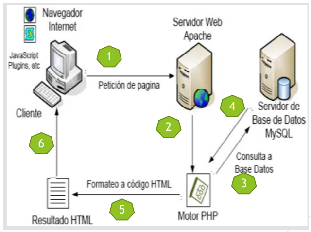
📖 La interconexión física de estos millones de equipos distribuidos por el planeta se realiza mediante múltiples tecnologías de transmisión:
-
Enlaces inalámbricos/inalámbricos de larga distancia: Conexiones satelitales, ondas de radio y microondas.
-
Cableado estructurado y terrestre: Par trenzado de cobre en redes locales y el despliegue masivo de redes de Fibra Óptica terrestre.
-
Infraestructura submarina: Cables de fibra de alta capacidad que cruzan océanos para conectar continentes enteros.
-
Infraestructura telefónica convencional: Sistemas xDSL que aprovechan el antiguo bucle de abonado.
2.2. El Lenguaje de la Red: La Pila de Protocolos TCP/IP ¶
Para que ordenadores con distintos componentes de hardware y sistemas operativos (Windows, GNU/Linux, macOS, Android) puedan entenderse entre sí, es indispensable utilizar un "lenguaje estándar" común: la pila de protocolos TCP/IP (Transmission Control Protocol / Internet Protocol).
-
Protocolo IP (Internet Protocol): Se encarga del direccionamiento y del envío de paquetes de datos a través de la red, asegurando que cada paquete llegue a su destino pero sin garantizar el orden de llegada ni la pérdida de información en el trayecto.
-
Protocolo TCP (Transmission Control Protocol): Trabaja en una capa superior y se encarga de trocear los datos en paquetes, numerarlos en el origen, comprobar que no se pierdan en el camino y reordenarlos correctamente al llegar al destino. Si falta un paquete, solicita automáticamente su retransmisión.
-
Origen histórico 📖: Los inicios de esta tecnología se remontan a 1972, cuando fue implementado por primera vez en la red ARPANET bajo el auspicio del Departamento de Defensa de los Estados Unidos. Posteriormente, se convirtió en el cimiento del Internet comercial que conocemos hoy.
2.3. Clasificación de la Web por su Accesibilidad 📖 ¶
No todo el contenido de Internet es accesible de la misma manera. Podemos clasificar la información en tres grandes áreas de almacenamiento:
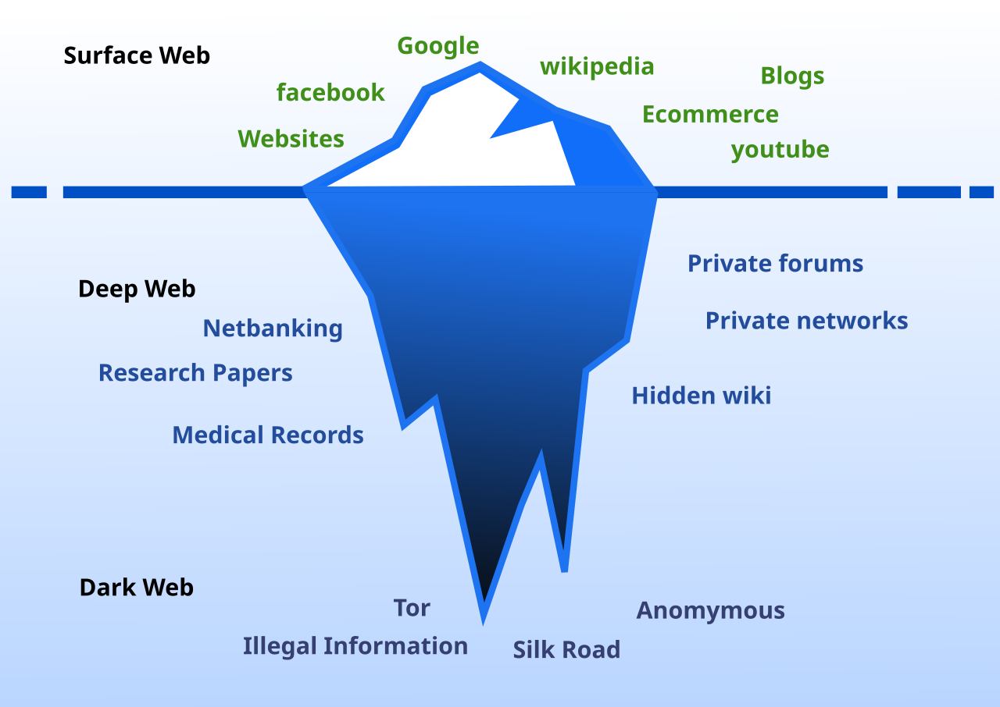
-
Surface Web (Web Superficial): Representa el contenido público que todos conocemos y visitamos a diario. Es indexado automáticamente por los motores de búsqueda convencionales (como Google o Bing).
-
Deep Web (Web Profunda): Almacena contenidos que no están indexados por los buscadores tradicionales. No contiene necesariamente material ilícito; de hecho, representa más del 90% de los datos en Internet. Incluye bases de datos privadas, historiales médicos protegidos, cuentas de correo personal, transacciones bancarias o repositorios académicos y científicos restringidos por contraseña.
-
Dark Web (Web Oscura): Es una porción pequeña de la Deep Web que ha sido ocultada intencionadamente. Sus páginas no son legibles por navegadores normales, requiriendo software específico de cifrado (como TOR) para acceder. Garantiza el anonimato absoluto de servidores y usuarios.
2.4. Servicios Primordiales de Internet ¶
Internet es la autopista de comunicación, pero sobre ella circulan diversos servicios especializados regulados por sus propios protocolos:
-
WWW (World Wide Web): Servicio que permite visualizar páginas y documentos hipertexto alojados en servidores web en todo el mundo, utilizando el protocolo HTTP/HTTPS y un software navegador.
-
Correo Electrónico (E-mail): Intercambio ágil de correspondencia digital y adjuntos. Utiliza protocolos como SMTP (envío de correos) y POP3 / IMAP (recepción y sincronización de mensajes).
-
Transferencia de Archivos (FTP): Servicio orientado al envío seguro y rápido de archivos grandes entre máquinas cliente y servidor mediante el protocolo FTP o su variante segura SFTP.
-
Terminal Remoto (Telnet / SSH): Permite el control, administración y mantenimiento de sistemas operativos de servidores remotos. Telnet envía la información en texto plano (inseguro); hoy en día ha sido sustituido por SSH (Secure Shell), que cifra toda la comunicación y comandos de consola.
-
Mensajería Instantánea e IRC (Internet Relay Chat): Canales de comunicación síncrona en tiempo real para texto plano, hoy integrados de forma transparente dentro de la interfaz del navegador.
-
Telefonía IP (VoIP): Servicio que transforma señales de voz analógicas en paquetes de datos digitales para realizar llamadas telefónicas por Internet (ej: Skype, Teams).
3. FUNDAMENTOS, ARQUITECTURA Y SERVICIOS ¶
3.1. Identificación en la Red: Direcciones IP y Nombres de Dominio ¶
-
Dirección IP: Es un código numérico exclusivo asignado a cada dispositivo (servidor, ordenador, impresora) conectado a una red, permitiendo identificarlo de forma unívoca.
-
Ejemplo IPv4: 192.168.1.45 (consta de 4 bytes o números de 0 a 255).
-
-
Nombres de Dominio: Puesto que recordar secuencias numéricas IP para cada servidor es difícil para los usuarios humanos, se diseñaron los nombres de dominio como equivalencias de texto fáciles de memorizar (ej: iescelia.org). Se clasifican según su terminación o TLD (Top-Level Domain):
-
Genéricos o internacionales (gTLD) 📖: Indican la naturaleza o finalidad del sitio.
-
.com (Comercial)
-
.org (Organizaciones sin ánimo de lucro)
-
.net (Proveedores de servicios de Internet e infraestructuras)
-
-
Geográficos o de país (ccTLD) 📖: Vinculados a territorios específicos gestionados por delegaciones nacionales.
-
.es (España)
-
.fr (Francia)
-
.uk (Reino Unido)
-
-
3.2. Proveedores de Internet (ISP) y Resolución DNS ¶
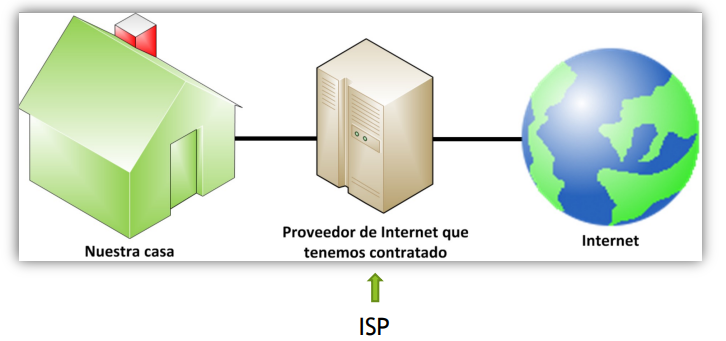
-
ISP (Internet Service Provider): Son las empresas (como Movistar, Orange o Vodafone) encargadas de suministrar el acceso físico a Internet del cliente y proporcionar direccionamiento lógico y conectividad.
-
Servidores DNS (Domain Name System): Sistema jerárquico que actúa como la "agenda de contactos" de Internet. Su misión es traducir nombres de dominio legibles por humanos (ej: google.com) a su correspondiente dirección IP lógica (ej: 142.250.200.78).
-
DNS Primario: Es el primer servidor al que el cliente realiza la consulta para resolver una URL.
-
DNS Secundario: Servidor de respaldo que entra en funcionamiento automáticamente si el primario no responde, garantizando la continuidad del servicio.
-
En entornos de redes locales e intranets, la configuración manual de estos servidores es una tarea clave para el técnico de sistemas.
-
3.3. El Servidor Web: HTTP/HTTPS, URLs, Virtual Hosts y Puertos ¶
-
Servidor Web: Es una aplicación que se ejecuta en una máquina servidor, escuchando peticiones en puertos específicos y sirviendo archivos web a los clientes mediante los protocolos:
-
HTTP (puerto estándar TCP 80): Envía la información en texto plano sin cifrar.
-
HTTPS (puerto estándar TCP 443): Variante cifrada mediante certificados SSL/TLS, garantizando que nadie pueda interceptar los datos entre cliente y servidor.
-
-
URL (Uniform Resource Locator): Ruta exclusiva que identifica a cada recurso en la red.
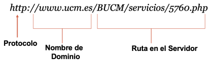
Concepto de Virtual Host 📖: Como técnicos de sistemas, debemos saber que un mismo servidor físico con una sola IP puede alojar múltiples sitios web distintos (ej: iescelia.org y departamento.local) mediante la configuración de Virtual Hosts en servidores como Apache o Nginx:
# Configuración básica en Apache
(/etc/apache2/sites-available/iescelia.conf)
<VirtualHost *:80>
ServerName www.iesceliavinas.local
DocumentRoot /var/www/iescelia
ErrorLog ${APACHE_LOG_DIR}/iescelia_error.log
CustomLog ${APACHE_LOG_DIR}/iescelia_access.log combined
</VirtualHost>3.4. El Cliente Web: Navegador ¶
El Navegador Web (Chrome, Firefox, Safari, Edge) es una aplicación cliente que solicita el código fuente (HTML, CSS, JS) de un recurso al servidor web, lo interpreta y lo dibuja en pantalla para el usuario de forma gráfica.
-
Motores de Renderizado 📖: El núcleo técnico del navegador que se encarga de procesar el código. Ejemplos de uso común: Blink (Chrome, Edge, Opera), Gecko (Firefox), WebKit (Safari)
-
Herramientas de Desarrollador (F12): Utilidad imprescindible para un técnico de SMR que permite auditar recursos de red, depurar fallos en la carga de scripts, modificar hojas de estilo CSS en tiempo real o analizar el código estructural procesado por el motor (DOM o Document Object Model).
3.5. Directrices de Calidad 📖 ¶
El técnico responsable de desplegar una aplicación web o un CMS debe velar por la calidad técnica del portal mediante las siguientes directrices básicas:
-
Dominio recordable: Seleccionar nombres de dominio cortos y sencillos.
-
Hosting Robusto: Alojar el sitio en servidores con baja latencia de red, evitando tiempos de inactividad que perjudiquen el negocio.
-
Arquitectura jerárquica: Organizar los archivos en el servidor siguiendo un árbol de directorios ordenado.
-
Compatibilidad y Adaptabilidad: Comprobar la visualización en diversos navegadores y asegurar que el diseño sea adaptable a dispositivos móviles (diseño Responsive).
-
Velocidad de Carga: Optimizar los pesos de las imágenes y la eficiencia del código para reducir el tráfico de datos.
-
Semántica y SEO: Usar de manera estructurada etiquetas semánticas (<h1>, <h2>) y etiquetas <meta> en la cabecera del documento para facilitar que los buscadores cataloguen el sitio.
4. EVOLUCIÓN DE LAS ETAPAS DE LA WEB 📖 ¶
La World Wide Web ha evolucionado rápidamente desde su creación a principios de la década de los 90.
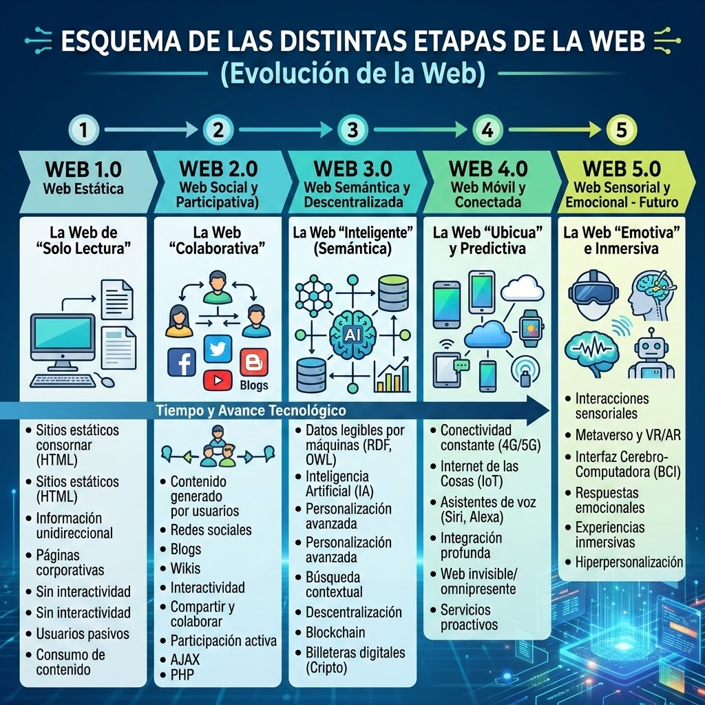
5. INTEGRACIÓN WEB Y BASES DE DATOS ¶
5.1. Arquitectura de 3 Capas (Cliente-Servidor Dinámico) ¶
A diferencia de la Web 1.0 (estática), la práctica totalidad de las aplicaciones corporativas modernas funcionan bajo un modelo de arquitectura distribuida en 3 capas:
-
Capa de Presentación (Frontend): Se ejecuta en el cliente (Navegador) a través de HTML5, CSS3 y JavaScript.
-
Capa de Negocio (Backend): Procesada en el Servidor Web (Apache, Nginx, IIS) mediante lenguajes interpretados como PHP, Python o C#.
-
Capa de Datos (Persistencia): Administrada por un Sistema Gestor de Bases de Datos (SGBD) como MariaDB, MySQL u Oracle.
5.2. Ciclo de Vida de una petición dinámica ¶
Cuando un usuario visita un gestor de contenidos o realiza una consulta, se inicia la siguiente secuencia técnica automatizada:
-
Petición: El navegador web envía una petición HTTP o HTTPS solicitando una página dinámica (ej: ver_usuarios.php).
-
Recepción: El servidor web (Apache) recibe la solicitud, detecta la extensión .php y pasa el control al motor o intérprete del lenguaje (Engine PHP).
-
Consulta de Datos: El código PHP procesa la lógica del script y abre una conexión al puerto del servidor de base de datos (MySQL), remitiendo una consulta SQL estructurada.
-
Procesamiento SQL: El SGBD (MySQL) ejecuta la consulta, recupera los datos de las tablas físicas del disco duro y devuelve los registros en bruto al motor PHP.
-
Renderizado HTML: El motor PHP recibe los datos, los inserta de forma transparente dentro de una estructura semántica HTML, dando por finalizada la ejecución del script.
-
Respuesta: El servidor web Apache envía el archivo HTML plano resultante de vuelta al navegador del usuario, que dibuja visualmente la información.
6. LENGUAJE DE MARCAS: HTML5 ¶
6.1. ¿Qué es HTML?
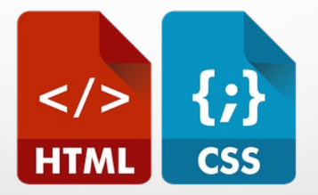
¶HTML (HyperText Markup Language) es un lenguaje de marcado utilizado para estructurar y organizar jerárquicamente el contenido de un documento web mediante etiquetas o marcas encerradas entre caracteres menor y mayor que (< y >).
No es un lenguaje de programación, ya que carece de lógica condicional, bucles o funciones aritméticas; su única misión es indicar al navegador la función semántica de cada elemento del documento (un párrafo, un título, una celda, etc.).
6.2. Estructura Semántica Estricta y Cabecera de Página ¶
Las instrucciones en HTML se componen habitualmente de etiquetas de apertura (ej: <p>) y etiquetas de cierre (ej: </p>).
También existen etiquetas vacías, como <br>, <hr>, <img> o <meta>, que no encierran contenido.
Los atributos añaden información a la etiqueta. Se escriben en la etiqueta de apertura: nombre="valor".
<img src="foto.jpg" alt="Paisaje" width="300" height="200">Para asegurar la compatibilidad con dispositivos móviles modernos, un documento HTML5 correcto debe tener la siguiente estructura semántica y de cabecera:
<!DOCTYPE html>
<html lang="es">
<head>
<!-- Declaración del juego de caracteres -->
<meta charset="UTF-8">
<!-- Configuración para la adaptabilidad móvil -->
<meta name="viewport" content="width=device-width,initial-scale=1.0">
<!-- Metadatos de SEO para optimización en buscadores -->
<meta name="description" content="Apuntes de la asignatura Aplicaciones Web para 2º de SMR">
<meta name="keywords" content="smr, aplicaciones web, informatica, html, css">
<meta name="author" content="Departamento de Informatica IES Celia Viñas">
<title>Fundamentos Web - SMR</title>
</head>
<body>
<!-- Estructura del cuerpo de la página -->
</body>
</html>-
<!DOCTYPE html>: Indica al navegador moderno que procese el archivo bajo la última especificación estándar de HTML5.
-
<head> (Cabecera): Contiene información técnica de control que no es visible de forma directa en el monitor para los usuarios, pero resulta vital para el navegador y los motores de búsqueda.
-
<body> (Cuerpo): Alberga todo el contenido (texto, imágenes, tablas) que sí será renderizado visualmente por el cliente web.
HTML5 introdujo etiquetas específicas para identificar las diferentes regiones de una página, permitiendo que navegadores y buscadores comprendan la arquitectura de la información de forma precisa:
-
<header>: Define la cabecera de una página o de una sección, conteniendo habitualmente logotipos o introducciones.
-
<nav>: Contenedor destinado exclusivamente a bloques de enlaces de navegación principal.
-
<main>: Encapsula el contenido central y único del documento, excluyendo elementos repetitivos como barras laterales.
-
<section>: Representa una agrupación temática genérica de contenido, normalmente con su propio encabezado.
-
<article>: Define una unidad de contenido independiente y autocontenida (ej. una entrada de blog o noticia).
-
<aside>: Contenido tangencial o relacionado de forma indirecta con el texto principal, como barras laterales o publicidad.
-
<footer>: Pie de página o de sección que suele albergar información de autoría, contacto o avisos legales.
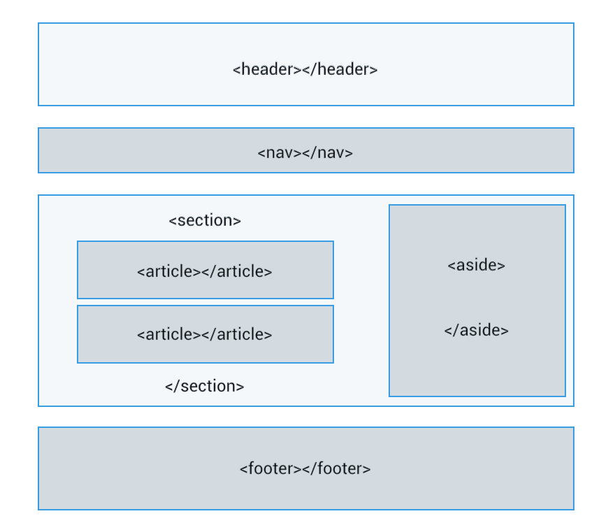
6.3. Elementos del Bloque de Texto ¶
A) Saltos de línea y Párrafos
En HTML, el navegador no tiene en cuenta la tecla Enter ni los espacios en blanco múltiples. Todo el texto corrido se dibuja en la misma línea.
-
Párrafo (<p> ... </p>): Agrupa un bloque de texto semántico y añade de forma automática un espacio vertical de separación con el siguiente bloque.
-
Salto de línea (<br>): Fuerza al texto a continuar de manera inmediata en la línea siguiente. No requiere etiqueta de cierre.
<p>SQL es el lenguaje estándar de bases de datos.<br>
MySQL es un servidor de base de datos muy popular.</p>B) Títulos y Encabezados
HTML5 proporciona seis niveles jerárquicos de títulos para organizar la información de mayor a menor importancia:
<h1>Este es un Título de Nivel 1 (Mayor importancia)</h1>
<h2>Este es un Título de Nivel 2 (Secciones principales)</h2>
<h3>Este es un Título de Nivel 3 (Subsecciones)</h3>
<h4>Título de Nivel 4</h4>
<h5>Título de Nivel 5</h5>
<h6>Título de Nivel 6 (Menor importancia)</h6>C) Bloques de Sangría (<blockquote>) y Direcciones (<address>)
-
<blockquote>: Añade una sangría simétrica a la izquierda y derecha del párrafo, útil para citas textuales.
-
<address>: Etiqueta semántica que se suele situar al pie de página para indicar información de contacto de los autores o empresas.
<blockquote>
<p>La web es una herramienta fundamental para el acceso a la información global.</p>
</blockquote>
<address>
Escrito por: Juan Simón Sánchez<br>
Email: <a href="mailto:juansimonsanchez@gmail.com">juansimonsanchez@gmail.com</a><br> IES Celia Viñas
</address>D) Énfasis de texto
Para destacar palabras o frases clave sin forzar un salto de línea:
-
<strong>: Indica máxima importancia semántica. Tradicionalmente los navegadores la renderizan en negrita.
-
<em>: Indica énfasis moderado. Tradicionalmente los navegadores la renderizan en cursiva.
<p>El protocolo <strong>HTTPS</strong> es la variante segura de HTTP y viaja de forma
<em>cifrada</em>.</p>También conviene diferenciar entre formato visual y significado semántico: <strong> indica importancia y <em> énfasis.
<p><b>Negrita</b>, <i>cursiva</i> y
<u>subrayado</u>.</p>
<p>H<sub>2</sub>O y 2<sup>3</sup> =
8.</p>Actividades de clase. Incluir SIEMPRE una etiqueta meta con vuestro nombre como autor
Ejercicio 0. Primeros ejemplos. Crea una página llamada ejercicio0.html con un título de pestaña 'Ejemplos de la teoría' y un encabezado h1 que diga 'Ejemplos incluidos en la teoría'. Incluir todos los ejemplos del apartado 6.3.
Ejercicio 1. Primera página Crea una página llamada ejercicio1.html con un título de pestaña 'Mi primera web' y un encabezado h1 que diga 'Bienvenido'.
Ejercicio 2. Párrafos y saltos Incluir en el archivo html anterior dos párrafos. En el segundo, fuerza dos saltos de línea con la etiqueta br.
Ejercicio 3. Formato. Incluir en el archivo html anterior un párrafo donde aparezcan una palabra en negrita, otra en cursiva y una fórmula con subíndice o superíndice.
6.4. Estructuración mediante Listas ¶
HTML5 proporciona tres métodos nativos de organización en listas:
A) Listas No Ordenadas (<ul>)
Colección de elementos donde no importa el orden secuencial. Los elementos van precedidos de viñetas (puntos):
<ul>
<li>Inicio</li>
<li>Servicios</li>
<li>Contacto</li>
</ul>Especialmente útiles para tutoriales o instrucciones de instalación técnica paso a paso:
<ol>
<li>Instalar el servidor web Apache.</li>
<li>Configurar el Virtual Host.</li>
<li>Reiniciar el servicio web.</li>
</ol>Muy recomendadas para la elaboración de glosarios técnicos:
-
<dl>: Contenedor general de la lista (Definition List).
-
<dt>: El concepto o término a definir (Definition Term).
-
<dd>: La explicación o descripción de dicho término (Definition Description).
<dl>
<dt>Hosting</dt>
<dd>Servicio de alojamiento para páginas web y aplicaciones en
un servidor conectado a Internet.</dd>
</dl>D) Anidamiento de Listas
Podemos insertar una lista completa dentro de un elemento de otra lista para crear jerarquías multinivel:
<ol>
<li>Sistemas Operativos:
<ul>
<li>GNU/Linux</li>
<li>Windows Server</li>
</ul>
</li>
<li>Servicios de Red</li>
</ol>6.5. Tablas ¶
Las tablas sirven para mostrar datos relacionales organizados de forma clara en filas y columnas. Se estructuran mediante las siguientes marcas:
-
<table>: Contenedor principal de la tabla.
-
<tr>: Delimita el inicio de una fila (Table Row).
-
<th>: Define una celda de encabezado, centrada y en negrita (Table Header).
-
<td>: Define una celda de contenido estándar (Table Data).
<!-- Ejemplo de tabla sencilla -->
<table border="1" >
<thead>
<tr>
<th>Servicio</th>
<th>Puerto TCP</th>
<th>Función Principal</th>
</tr>
</thead>
<tbody>
<tr>
<td>HTTP</td>
<td>80</td>
<td>Transferencia de páginas web sin cifrar</td>
</tr>
<tr>
<td>HTTPS</td>
<td>443</td>
<td>Navegación segura con cifrado SSL/TLS</td>
</tr>
</tbody>
</table>
<!-- Ejemplo de tabla con colspan y rowspan -->
<table border="1" >
<thead>
<tr>
<th>Servicio</th>
<th>Puerto TCP</th>
<th>Función Principal</th>
</tr>
</thead>
<tbody>
<tr>
<td rowspan="2">ssh</td>
<td>22</td>
<td>Acceso remoto seguro</td>
</tr>
<tr>
<td>80</td>
<td>Transferencia de páginas web sin cifrar</td>
</tr>
<tr>
<td>HTTPS</td>
<td colspan="2">Navegación segura con cifrado SSL/TLS</td>
</tr>
</tbody>
</table>
<!-- Ejemplo de tabla semántica con estilos CSS básicos integrados -->
<table border="1" style="border-collapse: collapse; width: 100%; text-align: center;">
<thead>
<tr style="background-color: #f2f2f2;">
<th>Servicio</th>
<th>Puerto TCP</th>
<th>Función Principal</th>
</tr>
</thead>
<tbody>
<tr>
<td>HTTP</td>
<td>80</td>
<td>Transferencia de páginas web sin cifrar</td>
</tr>
<tr>
<td>HTTPS</td>
<td>443</td>
<td>Navegación segura con cifrado SSL/TLS</td>
</tr>
</tbody>
</table>6.6. Gestión de Imágenes ¶
Para realizar la inserción de recursos gráficos dentro de un portal web, el estándar HTML5 proporciona la etiqueta <img>.
Dicha marca debe vincularse obligatoriamente al atributo src, el cual define la ruta o URL donde se localiza el archivo binario de la imagen.
Asimismo, el atributo alt resulta indispensable para la accesibilidad, permitiendo mostrar una breve descripción textual en caso de que el motor de renderizado no logre cargar el recurso.
Técnicamente, se trata de una etiqueta vacía, por lo que carece de marca de cierre.
<img src="nombrefoto.jpg" alt="Descripción de la fotografía">El control de las dimensiones espaciales se realiza mediante los atributos width (anchura) y height (altura), expresados habitualmente en píxeles.
Es posible añadir una delimitación visual utilizando el atributo border, que define el grosor de la línea perimetral del elemento.
La propiedad align permite gestionar la distribución horizontal del recurso, facilitando su alineación lateral o central respecto al flujo del documento.
<img src="nombrefoto.jpg" width="25" height="25" align="center" border="2">Para regular la separación física entre la imagen y otros elementos circundantes, se emplean dos atributos específicos:
vspace: Establece el margen de separación vertical en píxeles.
hspace: Establece el margen de separación horizontal en píxeles.
<img src="imagen.gif" align="left" vspace="35" hspace="35">La versatilidad de HTML permite combinar la inserción de recursos gráficos con la creación de enlaces de hipertexto.
Al anidar una etiqueta de imagen dentro de un contenedor de enlace, convertimos el recurso visual en un elemento clicable.
<a href="index.htm"><img src="img/izda.gif"></a>El lenguaje permite personalizar el contorno de las imágenes mediante un grosor variable.
A través del atributo border se definen diferentes niveles de intensidad:
border="0" (Sin borde visible)
border="1" (Borde estándar)
border="10" (Borde de gran grosor)
6.7. Hipervínculos ¶
El componente fundamental de la Web es el hipervínculo, mecanismo que permite la navegación interconectada entre diferentes recursos y páginas.
Por defecto, el cliente web renderiza este elemento como texto subrayado; al interactuar con él, el navegador procesa la carga del destino especificado.
La sintaxis estructural para establecer enlaces externos o internos es la siguiente:
<a href="https://www.20minutos.es">Acceso a Noticias</a>En este elemento introducimos la noción de atributo, el cual se integra en la marca de apertura mediante un par nombre-valor.
Es imperativo que el valor asignado al atributo se encuentre delimitado por comillas dobles para su correcta interpretación.
El atributo href del elemento "a" define la referencia del recurso que el navegador debe renderizar tras la activación del vínculo.
<body>
<a href="https://www.google.es/">Buscador Google</a><br>
<a href="https://www.marca.com/">Diario Deportivo</a><br>
<a href="https://www.zara.com/es/">Tienda Online</a><br>
<a href="https://www.decathlon.es/es/">Artículos de Deporte</a><br>
</body>Además de la navegación externa, es posible vincular diversos documentos HTML propios para construir una arquitectura de sitio coherente.
A modo de ejemplo técnico, consideremos la interconexión entre dos archivos denominados pagina1.html y pagina2.html.
Contenido estructural del archivo principal:
<html>
<head>
<title>Estructura de Navegación – Página 1</title>
</head>
<body>
<h1>Índice Principal.</h1>
<a href="pagina2.html">Sección de Noticias</a>
</body>
</html>El valor de referencia se establece inmediatamente después del operador de asignación.
En el escenario planteado, el destino apunta a un fichero local que debe coexistir en el mismo directorio del servidor para asegurar la resolución de la ruta.
En el documento secundario, se implementa el retorno mediante la instrucción: <a href="pagina1.html">Salir</a>.
El técnico puede configurar interfaces donde las imágenes actúen como activadores de navegación al ser seleccionadas por el usuario.
<h2>Interactúe con los logotipos para acceder a los motores de
búsqueda principales.</h2>
<a href="https://www.google.es/"><img src="../foto1.jpg"
alt="Enlace a Google"> </a>
<br>
<a href="https://www.amazon.es/"><img src="../foto2.jpg"
alt="Enlace a Amazon"> </a>Para gestionar la apertura de recursos en nuevas instancias del navegador, el elemento "a" dispone de la propiedad especializada target.
Asignando el valor "_blank", forzamos al sistema a desplegar el contenido en una pestaña independiente, preservando la sesión actual.
<a href="http://www.youtube.com" target="_blank">Plataforma de Video</a>El proceso se basa en la inserción de marcadores técnicos en puntos estratégicos que servirán de destino para futuras peticiones.
A) Definición del Marcador
<a name="identificador">Texto de referencia</a>
<a href="#identificador">Desplazamiento al marcador</a>
<a href="historia.html#identificador">Enlace a sección externa</a>
<a href="#geografia">Ir a Sección Geográfica</a>
<!-- Contenido de la página -- >
<h2><a name="geografia">Sección:Geografía</a></h2>En este contexto, la marca de encabezado se utiliza exclusivamente para dotar de jerarquía visual al contenido definido.
Actividades de clase. Incluir SIEMPRE una etiqueta meta con vuestro nombre como autor. Modificar el título de la pestaña e incluir un encabezado h1 con el mismo texto descriptivo del contenido de la página
Ejercicio 4. Imagen. Crea una página llamada ejercicio2.html (con un título de pestaña y h1 p.e. 'Ejemplos de imágenes'). Busca y descarga una imagen de Almería. Inserta la imagen 5 veces con un texto alternativo. Cada imagen aparecerá con un tamaño distinto. Debajo, añade un enlace a la web externa donde aparece la imagen.
Ejercicio 5. Enlaces entre páginas Crea dos páginas html, llamadas ejercicio3.html y ejercicio4.html. Desde la primera se debe poder ir a la segunda, y desde la segunda volver a la principal.
Ejercicio 6. Listas En la página llamada ejercicio3.html, crea una lista desordenada con 5 aficiones (deportes, música, cine, lectura, viajes) y una lista ordenada con los pasos para abrir el navegador y visitar una web.
Ejercicio 7. Tabla básica. En la página llamada ejercicio4.html, diseña una tabla con tres columnas: Nombre, Asignatura y Nota. Añade tres filas de datos.
Ejercicio 8. Tabla con combinación. En el mismo archivo ejercicio4.html, crea una tabla de horario en la que una asignatura ocupe dos horas consecutivas usando rowspan o colspan.
6.8. Formularios ¶
Un formulario web (<form>) es el mecanismo básico que permite recopilar información introducida por el usuario y enviarla a un servidor web o motor dinámico para su procesamiento.
<!-- Ejemplo de formulario básico de contacto -->
<form action="procesar_contacto.php" method="POST">
<fieldset>
<legend>Formulario de Soporte Técnico</legend>
<div>
<!-- Label explícita conectada con el id del input -->
<label for="txtUsuario">Nombre de Usuario:</label>
<input type="text" id="txtUsuario" name="usuario" placeholder="Ej:Juan" required>
</div>
<div>
<label for="txtPass">Contraseña de Acceso:</label>
<input type="password" id="txtPass" name="contrasena" required>
</div>
<div>
<label for="txtComentarios">Descripción de la incidencia:</label><br>
<textarea id="txtComentarios" name="comentarios" rows="4" cols="50"></textarea>
</div>
<div>
<input type="checkbox" id="chkAviso" name="privacidad" required>
<label for="chkAviso">Acepto los términos del servicio</label>
</div>
<div>
<input type="submit" value="Enviar Reporte">
<input type="reset" value="Limpiar Campos">
</div>
</fieldset>
</form>Tipos de Control comunes en un formulario:
-
Cuadro de texto (type="text"): Entrada estándar para una sola línea.
-
Cuadro de contraseña (type="password"): Oculta los caracteres introducidos utilizando puntos o asteriscos.
-
Cuadro multilínea (<textarea>): Permite entradas de texto de varias líneas.
-
Casilla de verificación (type="checkbox"): Opciones independientes y no excluyentes.
-
Botón de radio (type="radio"): Opciones mutuamente excluyentes (se debe asociar el mismo atributo name para definir el grupo).
-
Lista Desplegable (<select>): Permite seleccionar una de varias opciones de una lista:
<select id="selSO" name="sistema_operativo">
<option value="win">Windows Server</option>
<option value="linux" selected>GNU/Linux Debian</option>
</select>6.9. Comentarios dentro de Código ¶
La etiqueta <!-- ... --> permite insertar notas explicativas dentro del código que serán totalmente ignoradas por el navegador web en pantalla, ayudando al técnico y programadores a organizar el código fuente.
7. CAPA DE DISEÑO Y MAQUETACIÓN: CSS3 ¶
7.1. Introducción a CSS3 y Modos de Aplicación ¶
CSS3 (Cascading Style Sheets) es el lenguaje que controla la presentación visual y estética de las páginas escritas en HTML (colores, fuentes, márgenes, diseño y disposición espacial de los elementos).
Podemos aplicar código CSS de cinco formas diferentes y complementarias:
-
En pequeñas partes de una página (<span>): Se declara el estilo directamente dentro de la etiqueta mediante el atributo style para modificar fragmentos específicos de texto sin romper la línea.
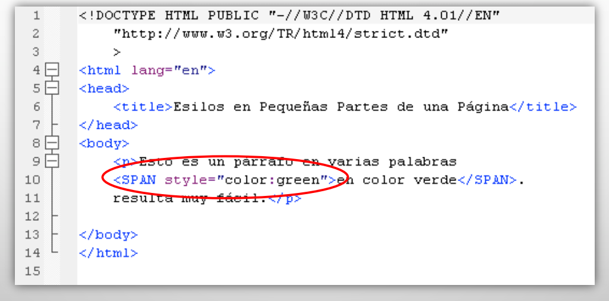
(Captura 1)
-
Estilo definido para una etiqueta específica: Se declara el estilo dentro de la propia etiqueta de apertura (estilo en línea o inline).
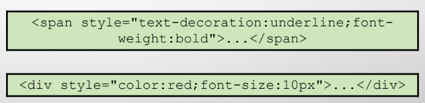
-
Estilo definido en una sección de la página (<div>): Se define el estilo dentro de la etiqueta contenedora. Todo el código HTML comprendido entre <div>...</div> asumirá el estilo definido.
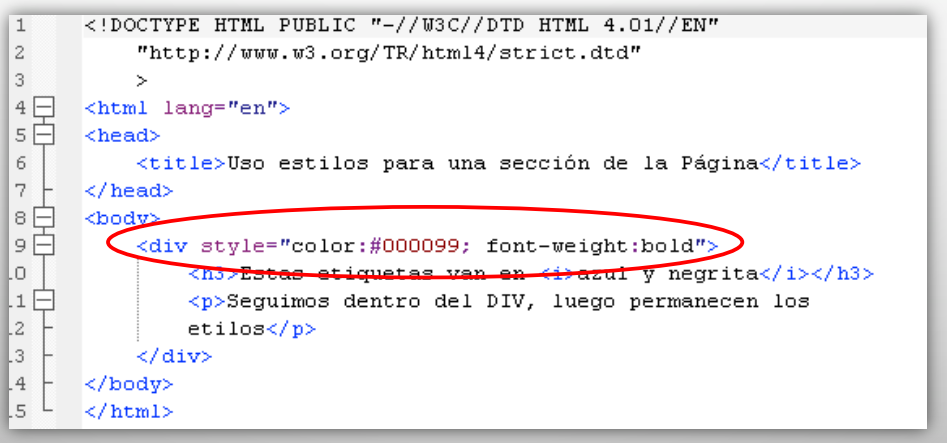
(Captura 2)
-
Estilo definido para toda la página (<style> en el <head>): Se escriben las reglas de estilo en la cabecera del documento entre las etiquetas <style type="text/css"> ... </style>. Los estilos definidos para body serán heredados por el resto de etiquetas que no tengan un estilo más específico.
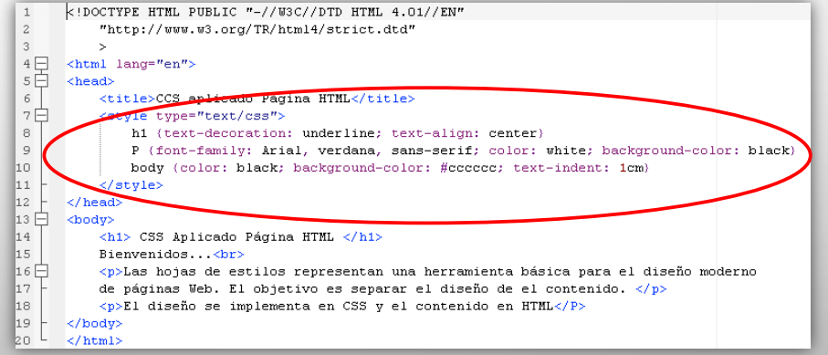
(Captura 3)
-
Estilo definido para toda la web (Hojas de estilo externas): Permite unificar el estilo de todo el sitio enlazando las páginas a un único archivo con extensión
.css. Presenta dos grandes ventajas: facilita el mantenimiento/modificación del sitio web y reduce sustancialmente las líneas de código HTML.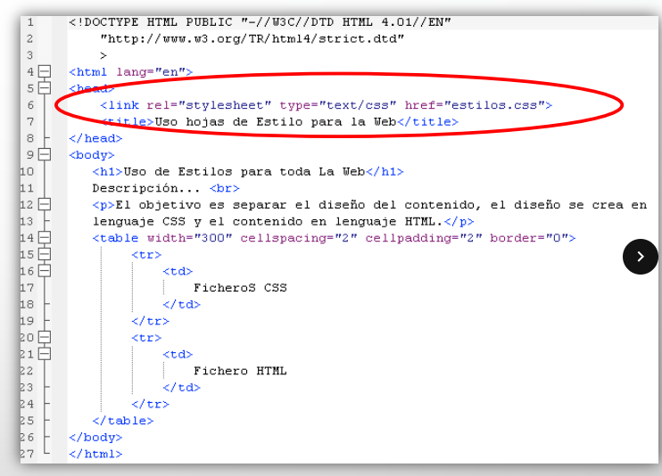
(Captura 4)
Ejemplos de aplicación:
<!-- 1. Pequeñas partes con span -->
<p>Texto normal y <span style="color: red; font-weight: bold;">texto destacado en rojo</span>.</p>
<!-- 2. Estilo en línea sobre una etiqueta -->
<p style="color: blue; font-size: 14px;">Párrafo con estilos inline aplicados directamente.</p>
<!-- 3. Sección con contenedor div -->
<div style="background-color: #e5e7eb; padding: 15px; border-left: 4px solid #2563eb;">
<h3>Sección de aviso</h3>
<p>Todo este bloque asume los estilos declarados en el div.</p>
</div>
<!-- 4. Estilos internos en cabecera -->
<head>
<style type="text/css">
body { font-family: Arial, sans-serif; }
p { color: darkblue; font-size: 16px; }
</style>
</head>
<!-- 5. Enlace a archivo externo .css -->
<head>
<link rel="stylesheet" type="text/css" href="estilos.css">
</head>También se puede importar una hoja de estilos externa desde dentro de otra declaración
CSS
mediante la directiva @import url("archivo_a_importar.css"); situada en la primera línea de
la
declaración de estilos.
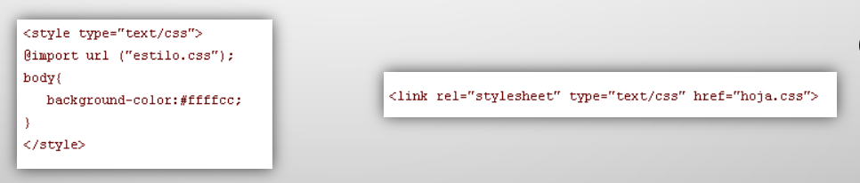
7.2. Prioridad y Herencia de los Estilos ¶
Los estilos se heredan de unas etiquetas a otras (por ejemplo, los definidos en <body> se transmiten a sus elementos hijos). Cuando más de una declaración afecta a la misma parte de la página, la regla general es: "tener en cuenta la declaración más particular".
Jerarquía de importancia y resolución de conflictos (de mayor a menor prioridad):
- Declaración de estilos para una pequeña porción con
<span>. - Estilos definidos en una etiqueta en concreto (atributo
style). - Definición de estilos en una sección con
<div>. - Declaración de estilos para toda la página mediante la etiqueta
<style>en el head. - Declaración de estilos mediante ficheros externos vinculados (
estilos.css).
7.3. Códigos de Colores ¶
Los colores en CSS se pueden especificar de tres maneras principales:
- Palabras clave: El estándar define 17 palabras clave básicas para colores universales (como black, white, red, green, blue, yellow, pink, gray, etc.).
- RGB numérico: Define la mezcla aditiva indicando la intensidad de rojo, verde y
azul con
valores enteros de 0 a 255. Si todas las componentes son 0 se produce el color negro
(
rgb(0, 0, 0)) y si todas toman 255 se obtiene el blanco (rgb(255, 255, 255)). Ejemplo:rgb(245, 67, 24). - RGB hexadecimal: Es el método más utilizado con diferencia en desarrollo web real.
Utiliza
el sistema hexadecimal (del 0 al 9 y de la 'a' a la 'f' para representar los valores 10 al 15)
precedido por
una almohadilla. Ejemplo:
#C7A680.
7.4. Sintaxis CSS y Trazado de Líneas (<hr>) ¶
Una sentencia CSS básica posee la estructura sintáctica formal: selector { propiedad: valor; ... }
- Selector: Indica sobre qué elemento o conjunto de elementos se aplicará el estilo
(ej:
p,h1,table). - Propiedad (atributo): Característica visual que deseamos modificar (ej:
font-size,color,text-align). - Valor: Parámetro concreto que adopta la propiedad (ej:
12pt,center,bold).
p { font-size: 10pt; text-decoration: underline; color: black; }
h1 { text-align: center; color: black; }Líneas horizontales de separación (<hr>): La etiqueta <hr> no
tiene
cierre y traza una división física en el documento. Aunque tradicionalmente admitía atributos como
size, color o width, las buenas prácticas actuales exigen aplicar
estas
propiedades directamente mediante CSS:
<!-- Tradicional (obsoleto) -->
<hr size="3" color="pink" width="50%">
<!-- Recomendado mediante CSS -->
<hr style="height: 3px; background-color: pink; width: 50%; border: none;">7.5. Reglas, Selectores de Elemento, Clases e Identificadores ¶
- Selector de Elemento o Etiqueta: Aplica las directrices de forma global a todas las
etiquetas de dicho tipo presentes en la página web (ej:
h1,p,table). - Clases (.nombre_clase): Mecanismo flexible y reutilizable para aplicar el mismo
estilo a
múltiples elementos del documento.
- Clases asociadas: Vinculadas a una etiqueta HTML en particular (ej:
p.aviso { color: red; }). Sólo pueden aplicarse en dicha etiqueta. - Clases no asociadas (genéricas): Definidas únicamente con un punto delante (ej:
.destacado { font-weight: bold; }). Se pueden aplicar a cualquier elemento HTML mediante el atributoclass="destacado".
- Clases asociadas: Vinculadas a una etiqueta HTML en particular (ej:
- Identificadores (#nombre_id): Estilos aplicados de manera unívoca a un solo
elemento
concreto de toda la página mediante el atributo
id="nombre_id". No pueden existir dos elementos con el mismo ID dentro de un mismo documento HTML.
/* Regla de clase en hoja de estilo */
.texto-alerta {
color: red;
font-weight: bold;
}
/* Regla de identificador único */
#menu-principal {
background-color: #333333;
padding: 10px;
}7.6. Propiedades de Fuente, Texto y Fondos ¶
CSS dispone de familias de propiedades especializadas para controlar el diseño:
- Fuentes (font):
font-family: Familia tipográfica (ej: Arial, Helvetica, sans-serif).font-size: Tamaño de la letra (en px, pt, em o rem).font-style: Modificador de estilo (normal, italic, oblique).font-weight: Grosor del trazo (normal, bold, bolder, lighter o valores numéricos 100-900).font-variant: Variantes tipográficas (normal, small-caps).
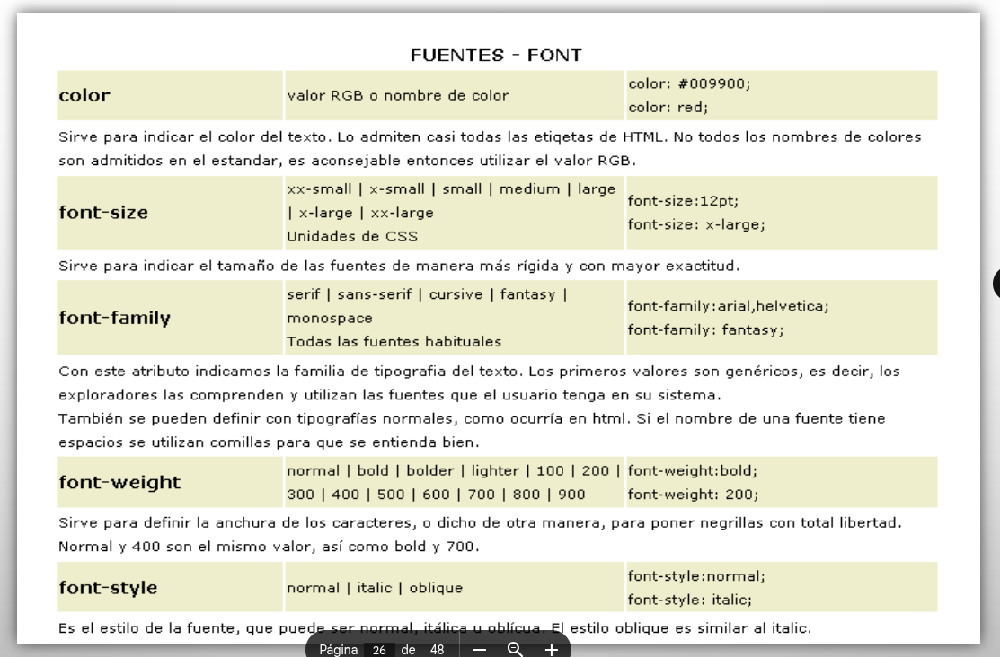
- Párrafos y Alineación (text):
text-align: Alineación horizontal del texto (left, right, center, justify).text-decoration: Decoración de línea (none, underline, overline, line-through).text-indent: Sangría de la primera línea del párrafo.line-height: Interlineado vertical entre líneas de texto.text-transform: Transformación de mayúsculas/minúsculas (capitalize, uppercase, lowercase, none).letter-spacing/word-spacing: Espaciado entre letras o entre palabras.
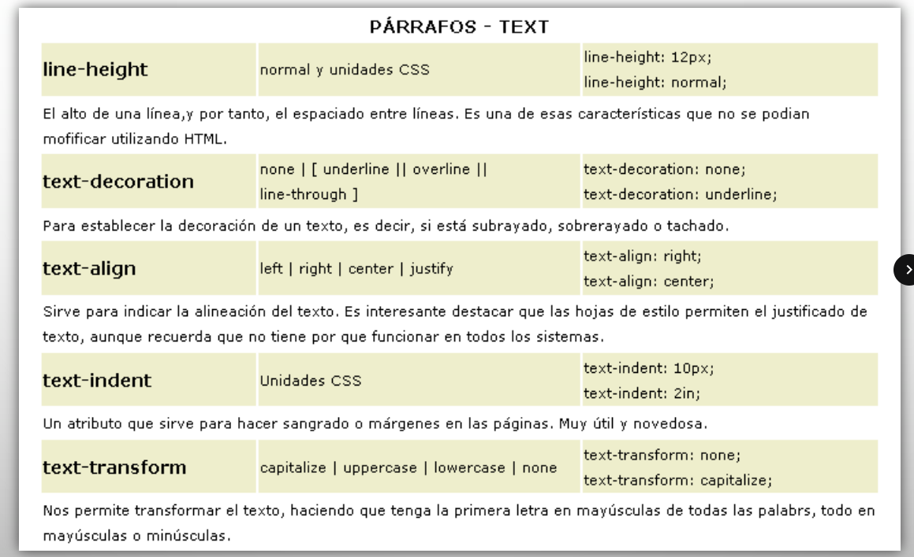
- Fondos (background):
background-color: Color sólido de fondo (por nombre, RGB o hexadecimal).background-image: Carga una imagen de fondo (url('ruta.png')).background-repeat: Comportamiento de repetición (repeat, repeat-x, repeat-y, no-repeat).background-attachment: Fijación del fondo durante el scroll (scroll, fixed).background-position: Posicionamiento inicial de la imagen de fondo (top, center, bottom, left, right o coordenadas).
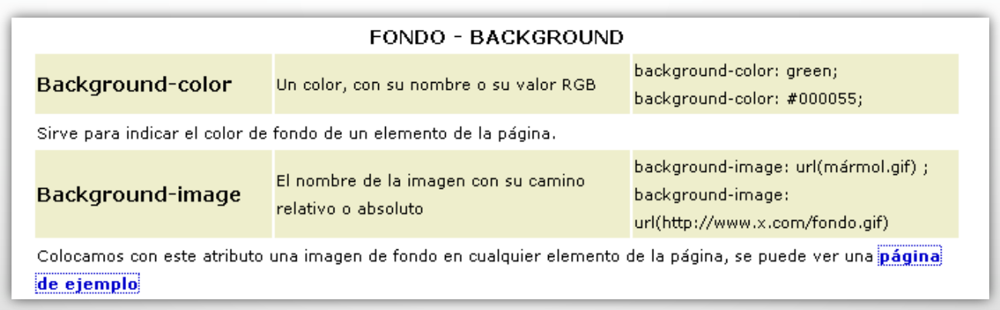
7.7. Capas y Posicionamiento (Absolute, Relative, Z-Index) ¶
Las capas son contenedores en bloque creados al asociar estilos CSS a etiquetas
contenedoras
(habitualmente <div> para secciones completas o <span> para
elementos en
línea). Cada capa equivale a una caja independiente cuyo comportamiento, tamaño y ubicación exacta en
pantalla
podemos controlar con precisión mediante las propiedades de posicionamiento:
- position: Define el tipo de esquema de posicionamiento:
static: Posicionamiento por defecto en el flujo normal del documento.relative: El elemento se desplaza tomando como referencia su ubicación original en el flujo sin alterar a las demás cajas.absolute: La caja se extrae del flujo de la página y se ubica con precisión milimétrica tomando como referencia el borde de su contenedor posicionado más cercano o la propia ventana del navegador.fixed: Permanece anclada en una coordenada fija de la pantalla, sin moverse incluso al hacer scroll.
- Coordenadas espaciales:
top,bottom,left,rightregulan las distancias exactas a los bordes de referencia. - Dimensiones:
width(ancho) yheight(alto), expresados en px, porcentajes (%) o unidades relativas. - visibility: Controla si la capa se dibuja o no en el monitor (visible, hidden,
inherit). A diferencia de
display: none, una capa convisibility: hiddencontinúa ocupando su espacio físico en el flujo. - z-index: Establece el orden de superposición vertical de capas apiladas en el eje Z (a mayor valor numérico, la caja se dibuja por encima de las capas con menor índice).
- clip: Permite recortar y ocultar partes concretas de una capa posicionada
absolutamente
mediante rectángulos (
rect(top, right, bottom, left)).
7.8. El Modelo de Caja (Box Model) en Profundidad ¶
Cada elemento HTML renderizado en pantalla se estructura conceptualmente como una caja rectangular compuesta por cuatro áreas concéntricas:
- Content (Área de Contenido): Espacio central donde se ubica el texto, imágenes o
elementos
anidados (delimitado por
widthyheight). Muestra el fondo establecido enbackground. - Padding (Área de Relleno): Margen interior transparente que separa el contenido del
borde
de la caja. Adopta el color o imagen de fondo del elemento.
- Propiedades:
padding-top,padding-right,padding-bottom,padding-lefty la propiedad unificadapadding.
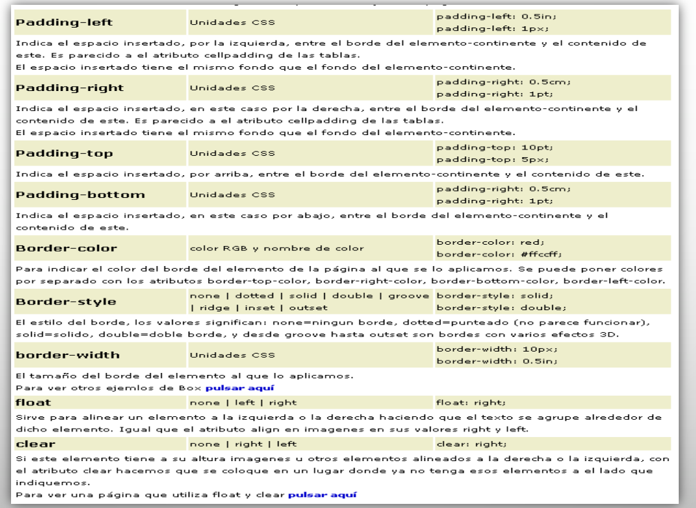
- Propiedades:
- Border (Área del Borde): Línea perimetral que envuelve el relleno y el contenido:
- Grosor (width):
border-width(o desglosado por lados) con valores como thin, medium, thick o medidas exactas en píxeles. - Estilo (style):
border-stylecon valores: none, hidden, dotted, dashed, solid, double, groove, ridge, inset, outset. - Color (color):
border-colorconfigurando el tono cromático deseado.
- Grosor (width):
- Margin (Área de Margen): Espacio exterior que separa la caja de los elementos
colindantes.
El margen es siempre completamente transparente.
- Propiedades:
margin-top,margin-right,margin-bottom,margin-leftymargin.
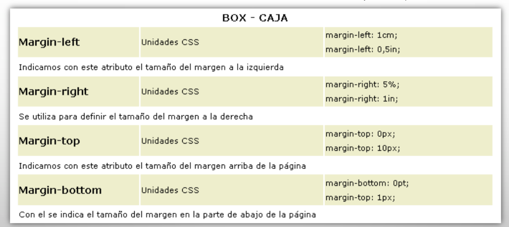
- Propiedades:
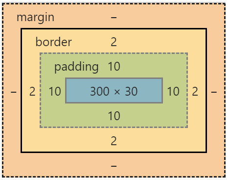
/* Ejemplo de caja con box-sizing configurado */
.caja-noticia {
width: 300px;
padding: 15px;
border: 2px solid #1a4f8a;
margin: 20px;
box-sizing: border-box; /* Asegura que el padding y borde no incrementen el ancho total de 300px */
}7.9. Propiedades Shorthand (Abreviadas) ¶
La sintaxis abreviada o shorthand permite condensar múltiples propiedades relacionadas en una única línea de declaración:
- font: Permite agrupar estilo, variante, grosor, tamaño/interlineado y familia.
p { font: italic normal bold 12px/14pt verdana, tahoma, arial; } - background: Agrupa color, imagen, repetición, fijación y posición.
body { background: #fff url(../images/ejemplo.gif) no-repeat fixed center; } - margin y padding:
- 1 valor: Se aplica a los cuatro lados por igual. Ejemplo:
margin: 10px; - 2 valores: El primero fija superior e inferior; el segundo fija izquierdo y
derecho.
Ejemplo:
margin: 10px 20px; - 3 valores: Superior, laterales (izq/der) e inferior. Ejemplo:
padding: 2em 3em 4em; - 4 valores: Sentido de las agujas del reloj (arriba, derecha, abajo, izquierda).
Ejemplo:
margin: 10px 15px 20px 25px;
- 1 valor: Se aplica a los cuatro lados por igual. Ejemplo:
- border: Agrupa grosor, estilo y color.
h3 { border: thick dotted blue; }
Actividades prácticas de CSS
Ejercicio CSS 1. Realiza un archivo HTML (ejercicio_css_1.html) con estructura HTML5 estricta (lang="es"). Aplica estilos a partes concretas usando etiquetas span con colores personalizados, añade estilos a párrafos concretos y define estilos en la cabecera mediante la etiqueta style.
Ejercicio CSS 2. Fuentes y Párrafos. Crear un archivo HTML que incluya 3 párrafos. A cada párrafo se le aplicará un mínimo de 3 estilos diferentes que afecten a la fuente con distintos valores (font-family, font-size, font-weight). Añade además propiedades que afecten a la alineación e interlineado del texto.
Ejercicio CSS 3. Clases e Identificadores. En un archivo CSS externo, define al menos dos clases genéricas y un identificador (#) de estilo. Enlaza dicho archivo en tu documento HTML y aplícalos a distintos párrafos y elementos span.
Ejercicio CSS 4. Maquetación con Capas. Realiza una maquetación utilizando contenedores div posicionados con margin, padding y border, verificando que los márgenes exteriores se mantengan transparentes y el fondo afecte al área de contenido y relleno.
7.10. Frameworks CSS (Concepto, Layouts y Rejillas) 📖 ¶
Un Framework CSS es un conjunto de archivos, clases y estilos predefinidos y distribuidos habitualmente bajo licencias libres (GPL o MIT) que aceleran el desarrollo de interfaces web.
Componentes habituales de un framework:
- Layouts (Rejillas / Grids): Dividen el lienzo visual en un sistema de columnas (habitualmente de 12 o 16 columnas) para posicionar y alinear los elementos con orden y rapidez.
- Tipografía preestablecida: Reglas tipográficas normalizadas para títulos, párrafos y enlaces sin necesidad de definirlos manualmente desde cero.
- css-reset: Bloque de estilos que homogeniza los valores por defecto de todos los navegadores, garantizando compatibilidad cross-browser.
- Componentes de interfaz listos para usar: Clases prediseñadas para botones, barras de navegación (navbar), menús desplegables, formularios y tablas.
Balance técnico:
- Ventajas: Maquetación acelerada, compatibilidad garantizada en todos los navegadores habituales, código más limpio bajo patrones estándares y facilidad de integración en proyectos colaborativos de equipo.
- Desventajas: Curva de aprendizaje inicial para dominar la nomenclatura de clases, código HTML sobrecargado de clases prefabricadas y carga inicial de hojas de estilo con reglas no utilizadas que pueden incrementar el tiempo de descarga.
Frameworks habituales:
Además de herramientas modernas como Bootstrap o Tailwind CSS, históricamente se han utilizado marcos de trabajo modulares como 960 Grid System (basado en un ancho fijo de 960 píxeles dividido en columnas), Blueprint CSS, Simple CSS, Tripoli o Bluetrip.
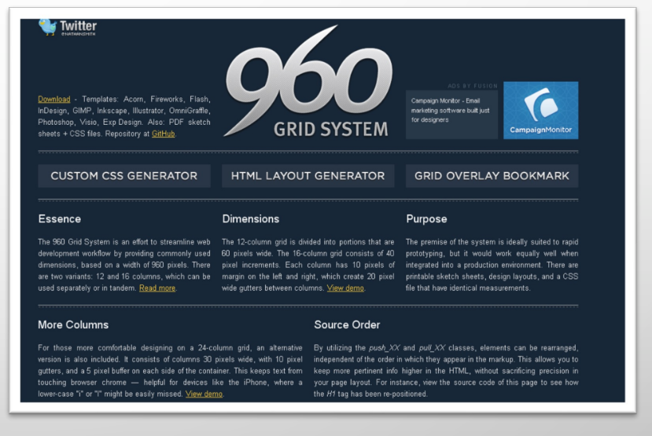